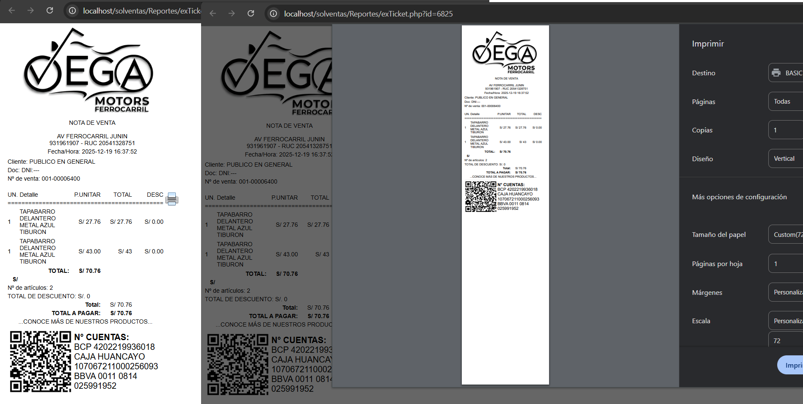

Precios por Mayor y Menor
// Selección dinámica de precios
if ($tipoVenta === 'MAYOR') {
$precio = $producto['precio_mayor'];
} else {
$precio = $producto['precio_menor'];
}
Permite seleccionar automáticamente el precio correcto según el tipo de venta, evitando errores y mejorando la velocidad de atención.

Ventas al Crédito
// Registro de ventas al crédito
if ($formaPago === 'CREDITO') {
registrarCredito($ventaId, $clienteId, $monto);
}
Registra ventas a crédito y las asocia al cliente correspondiente para su posterior control y seguimiento.

Generación del Ticket
// Generación de ticket
$ticket->addLogo($empresa['logo']);
$ticket->addTotales($subtotal, $igv, $total);
$ticket->render();
Construcción del ticket de venta con diseño profesional y estructura optimizada para impresoras térmicas.
